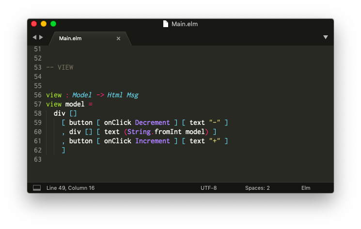

コードエディターをインストールする
最初のステップは、Elmファイルを扱うためにコードエディターを設定することです。

コミュニティのメンバーによってメンテナンスされている、さまざまなエディター向けのたくさんのプラグインがあります。その一覧をこちらから確認できます。
エディターの設定が面倒なものもありますので、このガイド向けにはSublime Textを取り上げて設定方法をご紹介します。この内容がプログラミング初心者の方々の役に立つことや、すでにお気に入りのコードエディターをお持ちの方の補助として役立つことを願っています。
Sublime Text
手順 1: こちらからSublime Textをダウンロードします。
手順 2: "Elm Syntax Highlighting"プラグインをインストールします。
上記の手順を実施すると、構文の強調表示がなされた状態でElmファイルを開けるはずです。 importやtypeのような予約語がカラフルに表示され、それによってコードがより読みやすくなります。
Note: ほかのエディターを使うのも良いでしょう！コミュニティのメンバーがAtom、Emacs、IntelliJ、Vim、VS Codeなどたくさんのエディター向けにプラグインを作りました。我々はプラグインが利用可能なすべてのエディターを記載してプラグイン一覧のページを最新の状態に保つようにしています！